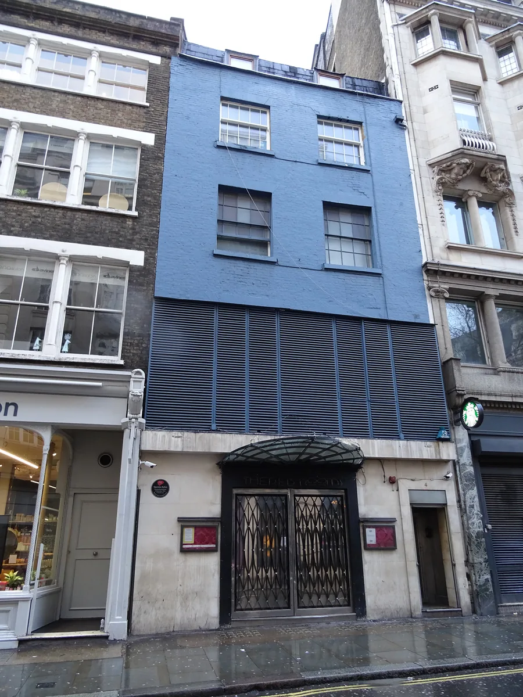
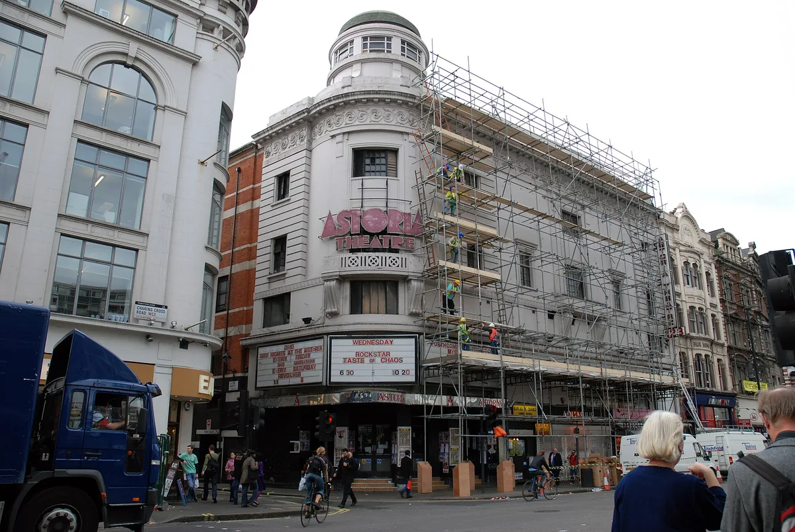
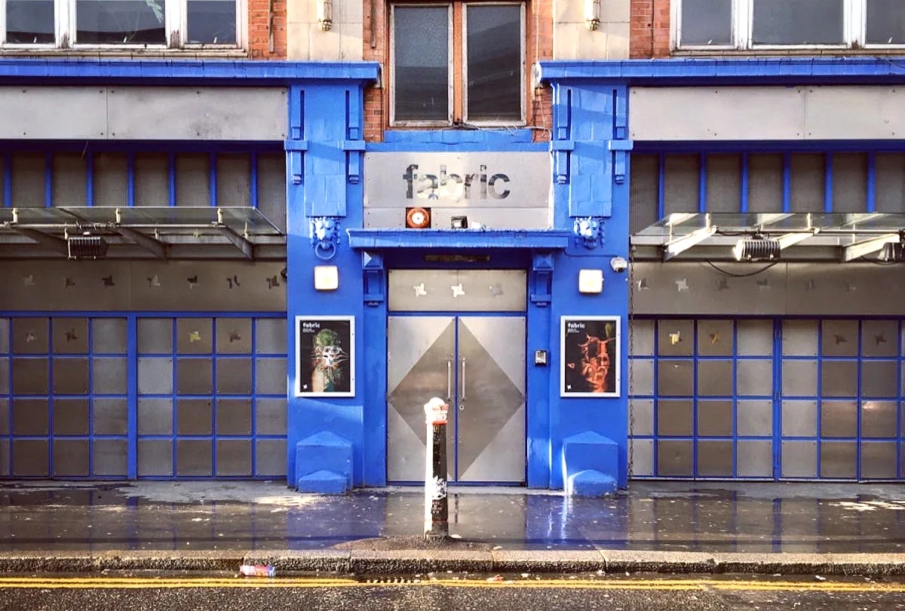
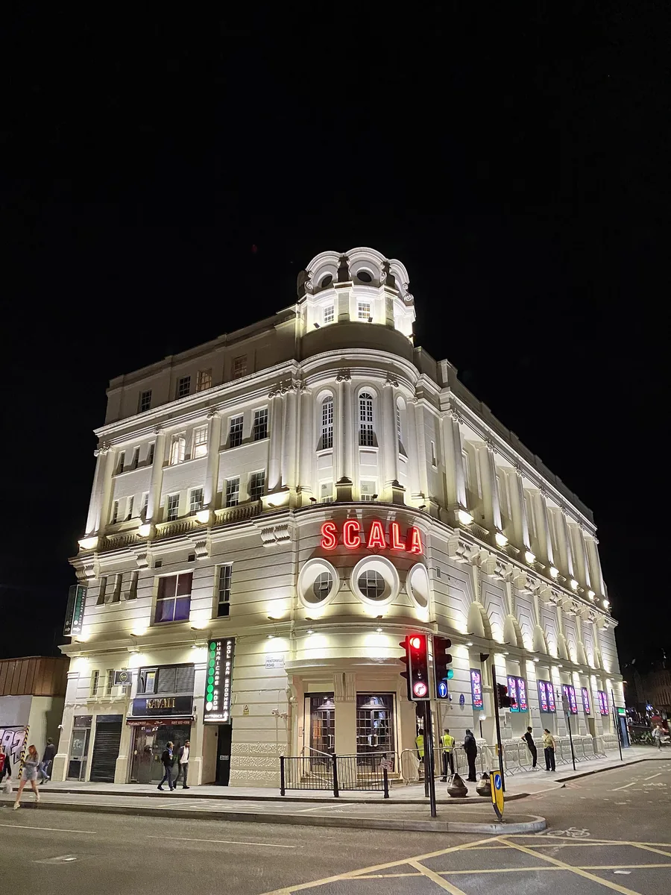

London clubs
Clubs in London: the rooms that made the music, and the best ones now
From the Four Aces and the Blitz to Rage, the Blue Note and fabric: the London clubs behind acid house, jungle, garage and dubstep, and the ones worth your weekend now.
The music first, then next weekend.
This guide picks clubs in London by one test: what played in the room, and what came out of it. Not the door price and not the table service. Most of the rooms that gave London acid house, jungle, UK garage and dubstep have closed, so the history comes first. The night clubs in London worth your weekend now come after it, in a table.
There is another London in every search for the best nightclubs in London. Cirque le Soir, the Cuckoo Club, Dear Darling, The Box in Soho and the members' club Home House sell tables, bottles and a place on the guest list. The guest-list sites ranking above this page do that job better than a music guide could, and this one is not about those rooms. It is about the ones where the music was the point.
Every date below comes from a source listed at the end. Where the sources disagree, the page says so rather than picking the tidier story.
Before acid house: sound systems, the Blitz and Heaven.
The Four Aces Club opened in 1966. The Jamaican producer Charlie Collins, known as Sir Collins, and Newton Dunbar set it up as a live music venue for people from the West Indies, first in a basement in Highbury Grove and then at 12 Dalston Lane. It was the first club to open in Hackney. Its Wikipedia article credits it with a part in reggae's evolution into dance music, from ska and rocksteady through dub and dancehall to jungle, and that is not a figure of speech: the same building turns up again in the jungle story below.
In 1979 Steve Strange, on the door, and Rusty Egan, at the decks, moved the Tuesday night they had been running at Billy's in Soho to the Blitz, a wine bar at 4 Great Queen Street in Covent Garden. The night had no name and was publicised by word of mouth. It ran for about twenty months, the Daily Mirror called its regulars the Blitz Kids in March 1980, and it is credited with launching the New Romantics. Spandau Ballet played there in 1979 and 1980. The cloakroom attendant, George O'Dowd, became Boy George.

The Blitz sat between two art colleges, St Martin's and Central, which is why it became a testing ground for student fashion as much as for records. That is the first shape of a London club this page keeps finding: a small room, a strict door and a night that meant more than its music.
Heaven opened in December 1979 in the arches beneath Charing Cross station, in a former club called Global Village. Jeremy Norman built it as a gay club on a larger scale than London had seen; until then most gay clubs in the city were small cellar bars or pub discos. Its first resident DJ, Ian Levine, is credited with being one of the first in the UK to beatmix, and his mix of disco and Hi-NRG became known as the Original Heaven Sound. Keep that room in mind. It comes back in almost every section of this page.
1988: acid house finds its London rooms.
In the summer of 1987 four London DJs went to Ibiza on holiday: Paul Oakenfold, Nicky Holloway, Johnny Walker and Danny Rampling. What they heard there, at Amnesia and Space, came home with them, and within a year three of them had London nights built on it.
Rampling's came first. Shoom opened on a Saturday in November 1987 in a basement fitness centre gym on Southwark Street, south of the river, with room for about 300 people. The first night was billed as Klub Schoom and the name was cut to Shoom by the second. Rampling borrowed from family and friends to pay for it and asked Carl Cox for the sound system. Jenni Rampling ran the door, and ran it strictly. Shoom closed early in 1990, after drug use at the club began to draw police attention.
Oakenfold took his to Heaven. Future ran on Thursdays in Heaven's Soundshaft, and Spectrum, which he promoted with Ian St Paul, ran on Monday nights from April 1988 to 1990. For his Land of Oz nights Oakenfold brought in Jimmy Cauty and Alex Paterson of The Orb as ambient DJs in a room called the White Room, and Wikipedia's Heaven article calls those sessions the birth of ambient house.
Holloway's was Trip, at the London Astoria on Charing Cross Road. His own Wikipedia article dates it to the end of May 1988 and calls it one of the first legal acid house clubs; the Astoria's article puts it in 1988 as well. Wikipedia's article on Shoom says June 1987, which the other two contradict, and this page follows the two that agree. Trip later changed its name to Sin, because the first name was too closely tied to the drugs.

The Astoria closed in January 2009 under a compulsory purchase order and was demolished for Crossrail, over public opposition. The building that housed one of London's first legal acid house clubs made way for a railway.
Not every room was a club. Revolution in Progress, known as RIP, held warehouse parties at Clink Street, in a former jail in south-east London. That split, a licensed club on one side of the river and an unlicensed warehouse on the other, is the shape of the next ten years.
Rage, Labrynth and the Blue Note: where jungle found its rooms.
Heaven carried more than one of those years. Kevin Millins' Rage ran there on Thursdays from October 1988 to 1993, with Fabio & Grooverider, Colin Faver and Trevor Fung among its DJs. Megatripolis took over the Thursday in October 1993 and ran until 1996.
Across town, Joe Wieczorek had been throwing illegal warehouse raves through 1988 and 1989. Newton Dunbar handed him the Four Aces, and in early 1990 Club Labrynth opened in the old building on Dalston Lane. Through the 1990s its music moved from house to hardcore and finally to jungle and drum and bass, and The Prodigy made their first live public appearance there. Hackney Council repossessed the building in 1997. It made way for the tower blocks of Dalston Square and the new Dalston Junction station, and Labrynth moved to Tottenham.
Wikipedia's article on jungle names the clubs where the sound was championed as AWOL, Roast and Telepathy, with DJs such as DJ Ron, DJ Hype, Randall, Fabio & Grooverider, Micky Finn, DJ Rap and Kenny Ken, and Kool FM on the pirate side. The jungle guide follows the records; this page follows the rooms.
One of those rooms sent a man home wanting to build his own. Kemistry took Goldie to Rage, and the Metalheadz article records the night it landed: Storm remembers him coming back to their flat wanting a label, a club and DJs. Metalheadz was founded in 1994 by Kemistry & Storm and Goldie. In July 1995 the label started its weekly Sunday Sessions, and they became legendary at the Blue Note in Hoxton, which the ICMP history says Eddie Piller founded. Goldie's debut album, Timeless, followed that September. The line from Rage to the Blue Note is the line from jungle to drum and bass.
In 2014 Mixmag filmed the label's DJs in London: Lenzman and Jubei, back to back with Ulterior Motive.
Ministry, The End and fabric: the big rooms.
Ministry of Sound began as Justin Berkmann's idea. He had been to New York's Paradise Garage and wanted a London club where the order of priorities ran sound system first, lights second and design third. The club spent £500,000 on the sound system and the same again on soundproofing. Humphrey Waterhouse introduced Berkmann to James Palumbo, then working in property finance, and the money followed. They found a disused bus garage at Elephant and Castle and opened on 21 September 1991, with Larry Levan, David Morales, Roger Sanchez, Tony Humphries and Paul Oakenfold on the opening bills. It has stayed on the same site since.
The End opened on Saturday 2 December 1995 in the West End, off New Oxford Street, in a building that once stabled the Post Office's delivery horses. Its founders were two DJs, Layo Paskin and Mr C, and Layo's father Douglas Paskin designed the room. The week was its argument: drum and bass and breakbeat on Fridays, techno and house on Saturdays, a dubstep night on Wednesdays, and on Mondays Trash, Erol Alkan's indie and electro night, which moved there from Plastic People and The Annexe. Roni Size won the Mercury Music Prize in 1997 while holding a residency at The End. It held 800, or 1,000 with the AKA bar next door, and it closed in 2009 with a 24-hour party. The building reopened as The Den, which lost its licence in 2012.
fabric opened on 29 October 1999, founded by Keith Reilly and Cameron Leslie in the old Metropolitan Cold Stores on Charterhouse Street, opposite Smithfield Market. It has three rooms with their own sound systems. The floor of Room One is a bodysonic dancefloor, with sections fixed to 400 bass transducers, so the bass reaches you through your feet.

DJ Magazine's poll voted it the best club in the world in 2007 and 2008. In September 2016 Islington Council revoked its licence after two drug-related deaths; a campaign to save it followed, and it reopened with more security and stricter conditions. It is on all four lists this guide read, and only The Cause and FOLD can say the same.
Keith Reilly, the founder, was still playing in 2024. This set, billed as a fabric special, is Reilly with Terry Francis and Howie B, filmed for Beatport at the Brighton Music Conference in 2024.
Sundays, Scala and Plastic People: garage and dubstep.
UK garage began as the second room at jungle events. Jungle had turned harsher, and the garage rooms offered something slower and more soulful, at about 130 beats per minute against jungle's 170. Promoters of the new sound could at first only hire venues on Sunday evenings, because Friday and Saturday still belonged to jungle and drum and bass, and that is how the Sunday Scene got its name. Wikipedia's article on UK garage gives an event at the Frog & Nightgown as an example. Larger clubs followed: Heaven gave space to garage DJs, and Scala, The Colosseum, The Gass Club, Ministry of Sound and fabric became especially associated with it.
Garage nights dressed up. Twice as Nice enforced a dress code of no trainers, jeans or baseball caps, to make people make an effort and to keep trouble out, and later installed a metal detector. The UK garage guide has the records.
Scala is on Pentonville Road by King's Cross, in a building put up as a cinema and interrupted by the First World War. It spent seventy years changing hands and programmes, nearly went bankrupt and closed in 1993. It reopened as a club in 1999, with the dancefloor and DJ booth built into the old lower seating.

Plastic People began in Soho, where Trash first ran, and moved to Curtain Road in Shoreditch; the ICMP history dates it from 2000 to 2015 and remembers it for its sound. From 2001 it was where the Forward night, written FWD>>, promoted the underground garage offshoot that became dubstep, alongside the pirate station Rinse FM. The dubstep guide picks up the sound from there.
The best clubs in London now.
Three lists that review London clubs were read for this page in September 2026: Resident Advisor's, Time Out's (updated on 29 July 2026) and Condé Nast Traveller's. fabric, The Cause and FOLD are on all three. The table below keeps the clubs that at least one of them names and that the rest of the research, from search demand to the clubs' own histories, backs up.
Two famous clubs in London are missing from it on purpose. Corsica Studios, two rooms in railway arches at Elephant and Castle since 2002, with a Funktion-One system from 2007, announced in September 2025 that it would close in its current form in 2026, and Resident Advisor records its last night on 28 March. Printworks, the former newspaper plant at Rotherhithe, closed for redevelopment in 2023; its Press Halls are scheduled to reopen as a venue in 2026.
FOLD was built for the long night. Seb Glover and the DJ Lasha Jorjoliani chose a former print works on an industrial estate in Canning Town precisely because it was far from housing, which won it a 24-hour licence from Newham. It opened on 18 August 2018 with a 24-hour event. The DJ booth is at floor level and photographs are not allowed.
The Cause opened in Tottenham Hale in 2018, run by Stuart Glen and Eugene Wild on a temporary arrangement with the landowner, with a community garden and a cafe. That site closed in 2022, and the club reopened at 60 Dock Road in Silvertown in 2023. Drumsheds, in the former IKEA at Edmonton, holds 15,000 and was set up after The Cause had settled nearby.
| Club | Where | Opened | Named by | Status, September 2026 |
|---|---|---|---|---|
| fabric | Farringdon | 1999 | RA, Time Out, Condé Nast | Open |
| The Cause | Silvertown | 2018 (here since 2023) | RA, Time Out, Condé Nast | Open |
| FOLD | Canning Town | 2018 | RA, Time Out, Condé Nast | Open |
| The Carpet Shop | Peckham | n/a | RA, Time Out, Condé Nast | Open |
| Dalston Superstore | Dalston | n/a | RA, Time Out, Condé Nast | Open |
| Phonox | Brixton | n/a | RA, Time Out, Condé Nast | Open |
| MOT | South Bermondsey | n/a | RA, Time Out, Condé Nast | Open |
| Drumsheds | Edmonton | n/a | Time Out, Condé Nast | Open |
| Ministry of Sound | Elephant and Castle | 1991 | Time Out, Condé Nast | Open |
| Heaven | Charing Cross | 1979 | Time Out, Condé Nast | Open |
| Colour Factory | Hackney Wick | n/a | RA, Time Out | Open |
| Ormside Projects | South Bermondsey | n/a | RA, Time Out | Open |
| Night Tales | Hackney Central | n/a | RA, Time Out | Open |
| KOKO | Camden | n/a | RA, Time Out | Open |
| XOYO | Shoreditch | 2010 | Time Out | Open |
| Brixton Jamm | Brixton | n/a | Condé Nast | Open |
Most of the table is east and south London, which is where clubbing in London has moved: Hackney Wick, Dalston and Canning Town on one side, Peckham, Brixton and South Bermondsey on the other. The West End rooms in the history above, the Astoria and The End, are gone, and so is the Blitz.
Phonox is in Brixton, and Rinse FM, the station that carried dubstep from Plastic People, has filmed live sets there. Both of the sets below come from Rinse's own channel.
Hear London before you go.
The rooms are easier to hear than to visit. Rinse filmed Oneman live from Phonox in January 2025, and Slimzee with D Double E and Riko Dan at Drumsheds in November 2024, which is about as direct a line as exists from London's pirate radio to a room of 15,000.
For something you did not choose, the Selector plays one of 62,877 recorded DJ sets at random, from Keep Hush at The Cause to Rinse at Phonox and Hospital Records at Drumsheds. The London clubs on this page are in there, alongside every other room those channels have filmed.
London clubs FAQ.
What is the most popular nightclub in London?
By searches, Ministry of Sound: about 7,100 a month in the UK, against 5,900 for fabric (Ahrefs, September 2026). By the lists that review clubs there is no single winner: fabric, The Cause and FOLD are on all four this guide read.
Where's the best place to go clubbing in London?
East and south London. Of the clubs in the table, most are in Hackney Wick, Dalston and Canning Town in the east, or in Peckham, Brixton and South Bermondsey in the south. fabric in Farringdon and Heaven at Charing Cross are the central exceptions.
Where was the Blitz club in London?
At 4 Great Queen Street in Covent Garden, where Steve Strange and Rusty Egan ran their Tuesday night in 1979 and 1980. The building is still there, with a plaque marking the night Spandau Ballet first played.
What are the top 10 nightclubs in London?
No two lists agree on ten. The three read for this guide all name the same seven: fabric, The Cause, FOLD, The Carpet Shop, Dalston Superstore, Phonox and MOT. Drumsheds, Ministry of Sound and Heaven are on two of them. That makes ten, and the table above says where each one is.
What is the biggest club in London?
Drumsheds, in the former IKEA store at Edmonton, which holds 15,000 people. Printworks at Rotherhithe held 6,000 across two rooms before it closed for redevelopment in 2023.
Sources.
- Wikipedia: The Four Aces Club
- Wikipedia: Blitz Kids (New Romantics)
- Wikipedia: Heaven (nightclub)
- Wikipedia: Shoom
- Wikipedia: Nicky Holloway
- Wikipedia: London Astoria
- Wikipedia: Acid house
- Wikipedia: Second Summer of Love
- Wikipedia: Jungle music
- Wikipedia: Metalheadz
- Wikipedia: Ministry of Sound
- Wikipedia: The End (club)
- Wikipedia: Trash (nightclub)
- Wikipedia: Fabric (club)
- Wikipedia: UK garage
- Wikipedia: Scala (club)
- Wikipedia: Dubstep
- Wikipedia: Corsica Studios
- Wikipedia: Printworks (London)
- Wikipedia: Fold (nightclub)
- Wikipedia: The Cause (London)
- Wikipedia: Drumsheds
- ICMP: A History of London Nightclubs
- Resident Advisor: Best Clubs in London, 2026
- Time Out: The best clubs in London, updated July 2026
- Condé Nast Traveller: The best clubs in London
Continue reading
Read next.
 A10Guide / Burning Man / ~12 min
A10Guide / Burning Man / ~12 minWhat Is Burning Man? The Event, the City and the Music
A city built in the Nevada desert for a week, with no lineup and nothing for sale, and the sound camps that play anyway.
Read article → A11Guide / Berlin clubs / ~10 min
A11Guide / Berlin clubs / ~10 minBest Clubs in Berlin: The Legends and the Ones Still Open
The rooms that made Berlin a techno city, the famous clubs that closed, and the best clubs in Berlin that are still open.
Read article → A03Timeline / UK music / ~27 min
A03Timeline / UK music / ~27 minThe Evolution of UK Electronic Music
Ten sounds that travelled from regional underground scenes into global culture.
Read article → A06Guide / Music discovery / ~10 min
A06Guide / Music discovery / ~10 minHow to Find New Music: 10 Ways That Are Not an Algorithm
Ten ways to hear something you have not heard before, from community radio to record credits, ordered by how much work they take.
Read article →